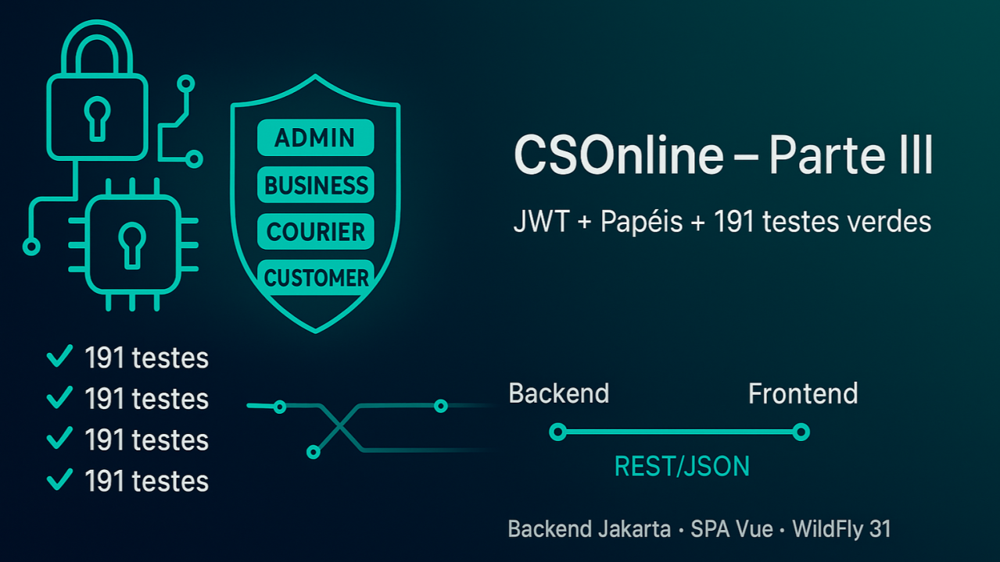

Evolução da aplicação CSOnline - Gestão de Centro de Distribuição (CDs)
CSOnline – Parte III: Segurança JWT, Autorização por Papéis e Testes 100% Verdes
Desenvolvedor Java Sênior | Especialista em Back-end | Jakarta, Spring Boot, REST APIs, Docker | Engenheiro Químico
9 de agosto de 2025
O que evoluiu nesta fase
Nesta terceira etapa avançamos em segurança, qualidade e preparo para a integração total do frontend Vue com o backend Jakarta EE. O sistema agora possui autenticação JWT robusta, autorização por papéis coerente nos endpoints, suíte de testes completa e scripts de desenvolvimento mais amigáveis.
Principais destaques:
- Segurança ponta a ponta com JWT (autenticação) e autorização por papéis (@RolesAllowed)
- Matriz de permissões alinhada aos casos de uso reais (ADMIN, BUSINESS, COURIER, CUSTOMER)
- Testes de controladores, serviços e repositórios estabilizados (191 testes passando)
- Ambiente de testes isolado (test.mode), base limpa por execução e Jackson registrado
- Endpoint de envio de SMS dedicado e ajustes finos em regras de acesso
- Prontos para integrar o SPA em Vue com os endpoints REST e tokens JWT
Segurança: autenticação e autorização
- Implementamos um filtro de autenticação JWT (JwtAuthenticationFilter) que valida o token do header Authorization e propaga para o contexto os dados do usuário (login, role, id).
- Criamos um filtro de autorização (AuthorizationFilter) que lê as anotações @RolesAllowed nos recursos e aplica a decisão com base no papel do usuário autenticado.
- Ajustamos as anotações de segurança nos controladores para refletir a regra de negócio:
- Users: criação, atualização e exclusão restritas a ADMIN
- Teams: atualização e exclusão restritas a ADMIN
- Prices: listagem por business permitida a ADMIN e BUSINESS
- SMS: deleção e busca por entrega restritas a ADMIN e BUSINESS; novo POST /sms/{id}/send
Resultado: respostas 401 e 403 passaram a refletir corretamente a ausência de token ou falta de permissão, e as operações válidas retornam 2xx como esperado.
Testes: cobertura confiável do backend
- BaseControllerJerseyTest ativa o modo de teste (test.mode) e garante limpeza da base entre cenários, evitando interferência entre casos.
- Reescrevemos e ampliamos os testes dos módulos Price (repository/service/controller), além de padronizar os de Courier, Customer, Delivery, SMS, Team e User para sempre enviar os headers de autorização corretos.
- Resolvemos falhas pontuais (401/403/415/400/500) com ajustes em headers, content-type e alinhamento de payloads.
- Estado atual: 191 testes, todos passando, garantindo estabilidade para a próxima fase.
DX e automação
- Scripts PowerShell simplificam o ciclo de desenvolvimento (build, deploy no WildFly 31, testes e verificação de saúde).
- Logs mais claros com Log4j2 ajudam no diagnóstico durante os testes.
- Documentação atualizada para orientar a configuração de ambiente e execução.
Integração Frontend (Vue) ↔ Backend (Jakarta)
Com a segurança e os contratos estabilizados, o próximo passo é ligar o SPA em Vue aos endpoints REST com JWT:
- Cliente HTTP com injeção automática do token JWT
- Tratamento padronizado de erros 401/403 no frontend (ex.: redireciono ao login/avisos de permissão)
- Guards de rota por papel (ADMIN, BUSINESS, COURIER, CUSTOMER)
- Habilitar CORS conforme necessário e mapear escopos de cada módulo (Users, Teams, Deliveries, SMS, Prices)
Como contribuir
- Frontend: integrar telas ao backend, melhorar UX/UI, criar guards por papel, estados vazios e feedbacks.
- Backend: refinar validações, paginação/ordenação de listagens, monitoramento e métricas.
- QA: cenários E2E (Cypress/Playwright) para fluxos críticos de autenticação e autorização.
- DevOps: pipelines de CI/CD e empacotamento para ambientes (dev/homolog/prod).
Faça um fork do repositório em https://github.com/chmulato/csonline e confira a documentação em doc/INDEX.md. Pull Requests são bem-vindos!